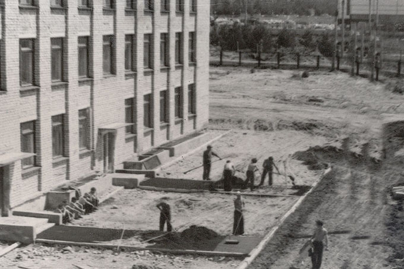
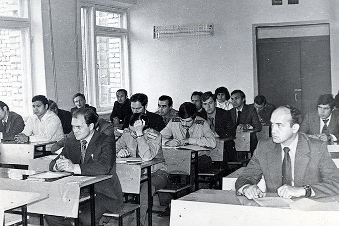
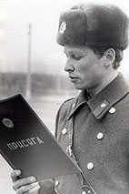

История
Воронежская специальная средняя школа милиции МВД СССР, которая стала основой для нынешнего института, получила здешнюю прописку почти случайно. Один из ветеранов вуза рассказывает по этому поводу такую историю. В 1972 году, тогдашнего начальника областного управления вневедомственной охраны Василия Ивановича Коротких вместе с коллегами из других региональных управлений вызвали в Москву на всесоюзное совещание. В процессе его проведения начальник Главного управления вневедомственной охраны МВД СССР генерал-майор милиции Андрей Михайлович Волков вдруг спросил у зала: «Товарищи, где же будем первую нашу школу открывать?». В.И. Коротких, набравшись смелости, возьми и скажи: «Воронеж – город вузовский, студенческий, давайте у нас». Волкову эта идея очень понравилась, и он сразу же назначил его ответственным за организацию специальной средней школы милиции. Так в 1972 году, во исполнение указания Министерства внутренних дел СССР, УВД Воронежского облисполкома приступило к строительству Воронежской специальной средней школы милиции МВД СССР.
Постановлением Воронежского горисполкома от 2 декабря 1972 года под ее будущую территорию был выделен небольшой земельный участок на юго-западной окраине города. Место было выбрано не случайно и совсем не потому, что другого, скажем, поближе к центру не было. Павел Иванович Зазулин, тогдашний заместитель начальника школы по строительству, говорил, что оснований для такого выбора было несколько: во-первых, сюда были подведены инженерные коммуникации. Во-вторых, недалеко располагался батальон милиции. Ну и главное: школа – закрытая организация, поэтому должна была быть немного вынесена за город.
В июне 1973 года Министерство внутренних дел СССР утвердило задание на проектирование комплекса средней школы на 500 человек, которое было осуществлено «Воронежгражданпроектом».
5 апреле 1978 года Совет Министров СССР издал распоряжение об организации Воронежской специальной средней школы милиции МВД СССР по подготовке специалистов со средним техническим образованием для подразделений вневедомственной охраны (специальность «Эксплуатация автоматических систем связи и сигнализации»), именно этот день считается отсчетной датой образования Воронежской специальной средней школы милиции МВД СССР. В июле того же года был издан соответствующий приказ Министерства внутренних дел Союза ССР. С 1 октября 1979 года первый набор курсантов в количестве 190 человек приступил к занятиям по программе подготовки специалистов для подразделений вневедомственной охраны.
В декабре 1979 года государственная комиссия приняла весь комплекс зданий, в который тогда вошли два 4-этажных корпуса (учебный и учебно-административный), а также спальный корпус на 570 мест, здравпункт, овощехранилище с продовольственным складом, гаражный комплекс, центральный тепловой, два трансформаторных пункта и некоторые другие небольшие строения.
Как вспоминает один из ветеранов Владимир Леонидович Чудинов, первое время школа была слабо оборудованной: «Если в классах еще была учебная мебель, то в кабинетах и лабораториях не было практически ничего. Многое нам приходилось делать самим вместе с курсантами, мы обустраивали лекционные залы и кабинеты».
В отличие от дня сегодняшнего учиться тогда в школу направляли только после службы в армии, людей взрослых, более подготовленных к тяготам службы. «Народ был организованный, им не приходилось повторять поставленные задачи или заставлять выполнять их», – говорит ветеран института, Виталий Иванович Лозовой, прошедший путь от лейтенанта до полковника милиции, начальника отдела воспитательной работы, ныне председателя Совета ветеранов института.
Среди курсантов первых наборов нашлись хорошие специалисты – электрики, плотники, сантехники. «Утром учились, а вечером – кто проводку чинил, кто сантехнику устанавливал. Сами курсанты делали наглядные пособия для новых аудиторий. А мы, в свою очередь, помогали курсантам, как могли. Стипендия-то в те времена совсем небольшой была, а некоторые из них уже имели семьи, воспитывали детей», – рассказывал Петр Васильевич Вернигоров, который, как утверждают опытные сотрудники института, лично знал буквально каждого курсанта школы милиции, хотя при полном наборе в специальной средней школе на трех курсах обучались 550 курсантов.
Принятие присяги первыми курсантами школы.
Ноябрь 1979 года
- Президент России
- Министерство внутренних дел Российской Федерации
- ДГСК МВД России
- Главное управление МВД России по Воронежской области
- Правительство Воронежской области
- Администрация города Воронежа
- Прокуратура Воронежской области
- СУ СК РФ по Воронежской области
- Министерство Юстиции Российской Федерации